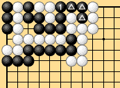
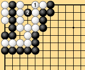
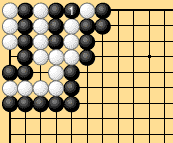
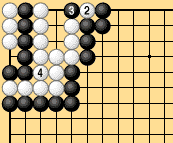

|
| Dia. 2-21 shows a curious position known as hane-seki. White gets annihilated if he plays 1 and captures the three black stones marked with triangles, but if Black plays 1 he also gets annihilated. For further explanation, look at the analogous position in Dias. 2-22-1 to 2-22-3. (In Dia. 2-22-1 White 1 has just captured three black stones.) The black stones marked with triangles in Dia. 2-21 cannot be removed as dead without further play. Are they alive? I think seki would be a better description, but we can see here that it is not easy to give a general definition of seki in words. |
|  |  |
| Dia. 2-21 | Dia. 2-22-1 |
|---|---|
|  |  |
| Dia. 2-22-2 | Dia. 2-22-3 |
|
It is extremely difficult to define life and death in hypothetical terms (in terms of intrinsic properties). No one at present has thought of a simple, elegant definition and there is not much hope of finding one in the future. One could claim that the point at 1 in the hane-seki is unsettled and ought to be resolved in some way. Both players, however, should be free to avoid moves that are to their disadvantage. Hane-seki is accordingly not a rules problem (unless you regard moving as an obligation, but then an even more serious problem arises). |